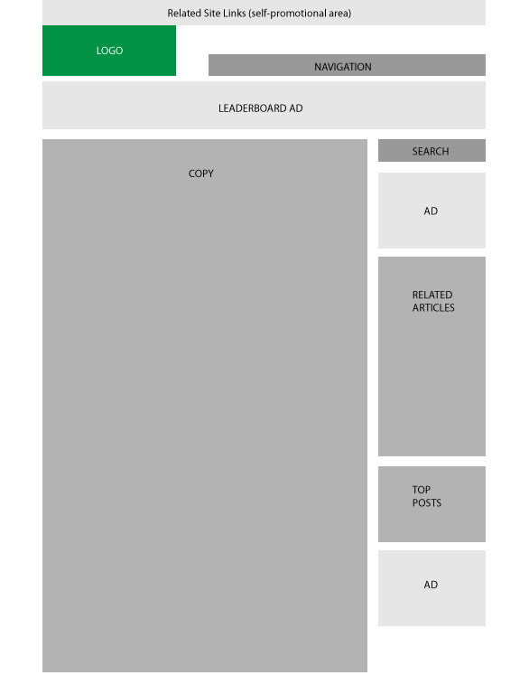
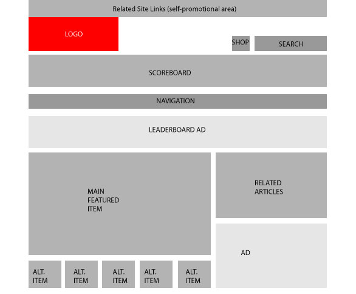
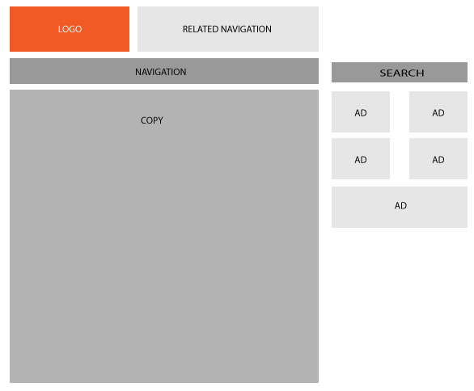

The problem for this page was to get aspects of the site's advertising and brand with prominent space while delivering their specific blog post.
The page has a a challenge of figuring out how to keep the user engaged without overwhelming them.
ESPN has to be unique in a flooded sports blog market while still making their website user friendly and keep their users engaged for long periods of time.
ESPN is also in the market for selling apparel and gear so they have the need to encourage shopping on a website that isn't primarily made for it.
Smashing has the interesting opportunity to be a desiged center for designers. They must present a website that offers great content to the most critical of audiences. They kept it extremely simple and used bright colors for wonderful contrasts.
